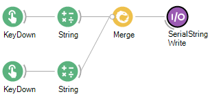
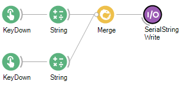
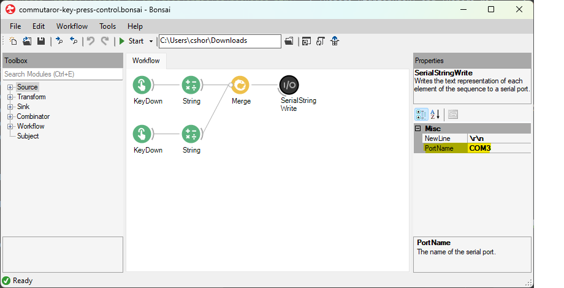

Quick Start Guide#
This quick start guide demonstrates how to perform commutation using key presses and Bonsai software.
- Mount the OEC above the behavioral setup such that the animal can traverse the setup’s full area
The OEC can be mounted to 80/20 aluminum extrusion or mechanical breadboard with 1/4”-20 or M6 screws
If custom mounting solutions are required, refer to the user guide for OEC dimensions
- Establish all electrical connections:
Secure the head-mount device to the OEC’s bottom SMA connector
Secure the data acquisition device (DAQ) to the OEC’s top SMA connector
Secure the computer to the OEC’s side micro-USB connector
Attention
All cables must be appropriate length and within-spec (More info in User Guide) TODO: Insert link
While establishing electrical connections, ensure cables are not within range to interfere with the tether when the animal moves. For example:

- Download and configure Bonsai:
Install necessary packages: Bonsai.StarterPack and Bonsai.Miniscope. Set package source correctly to find the necessary Bonsai packages)
- Download and open the example commutator workflow in Bonsai

 commutator-key-press-control.bonsai
commutator-key-press-control.bonsai
- Configure the PortName property of the Commutator node to reflect the port to which the commutator is connected by left-clicking the SerialWriteString node
- 
- Run the commutator workflow in Bonsai:
Voila! If all above steps are correctly performed, the commutator motor now rotates when the keys are pressed. Angular displacement can be controlled by left-clicking the String node
To learn more about how to use OECs or adapt them to your specific experiment, continue reading the documentation.
Todo
Bonsai screenshots
Connections images for commutators (fix labels?)
how to use with 80/20?